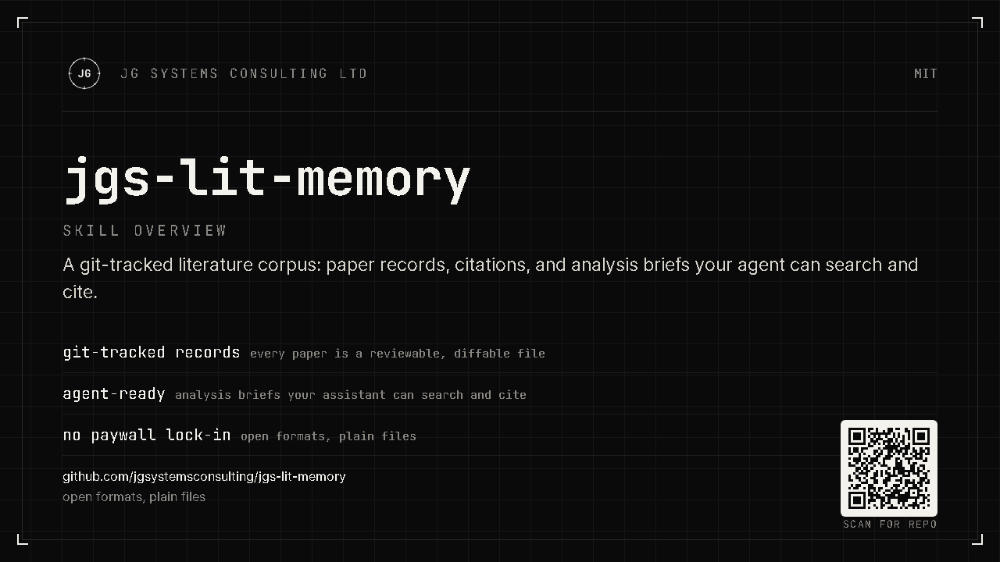

Papers and edges
papers/<W-id>.json, one record per work; graph/edges.jsonl carries who cites whom. Atomic writes: a crash never leaves a half-written file.
Capture the papers once. Query the corpus, not the internet, next time.
One skill and one script: paper records, citation edges, and analysis briefs in a git-tracked .lit corpus in your project.

Research conversations re-find the same papers every week. The corpus already answers two questions: "do we have it?", from one normalized JSON record per paper under papers/, and "who cites whom?", from the edges file graph/edges.jsonl. Neither layer records what the paper claims, how it was tested, its limits, or why the paper matters. The brief does. It is one analysis sidecar per paper under .lit/briefs/, drafted by the agent, validated and written by the script. Three layers in plain files, git-tracked, surviving every session: record, edges, brief. The next conversation asks the corpus before it asks the internet.
papers/<W-id>.json, one record per work; graph/edges.jsonl carries who cites whom. Atomic writes: a crash never leaves a half-written file.
Papers land in inbox.jsonl the moment they come up. No network needed. A triage run resolves the queue and reports what failed, with reasons.
A generated .lit/SKILL.md index carries counts and query recipes, so the agent checks the corpus before re-searching OpenAlex.
One paper end to end. Capture writes the record under papers/, adds citation edges to graph/edges.jsonl, and creates a pending stub at .lit/briefs/<W-id>.json. The agent drains the enrichment queue with --enrich-pending, drafts the brief, submits it through --brief-write, and verifies it with --brief-check. The script never calls an LLM; it stubs, lists, validates, and atomically writes.
First load of a paper creates .lit/briefs/<W-id>.json, a pending stub. The agent fills it by draining the enrichment queue, drafts the analysis, and submits it through --brief-write. The script never calls an LLM. It stubs, lists, validates, and atomically writes.
| Field group | Written by | Rule |
|---|---|---|
overview, claims (with in-paper supports / contradicts graph), methods, limits, why it matters | Agent | Drafted by the agent, submitted through --brief-write. |
status, basis | Script | Derived on every write. Never taken from the payload. |
human | You | Merge-only. A normal write keeps it. --human replaces it only when you dictated notes this turn. |
Lifecycle. pending (empty agent block), then partial (some content, not yet ready), then ready (ready content present).
--brief-write validates the payload and writes atomically, or rejects it with exit 1.
--brief-check [W-id] validates one brief or all: schema, id vs filename, claim graph, derived fields. Exit 1 when invalid.
--brief-check fails when a brief's id differs from its briefs/<stem>.json filename (1.2.1).
.lit/ lives in the project that produced it and is git-tracked there.
# the whole corpus, committed beside your code
.lit/
papers/<W-id>.json one normalized record per paper
briefs/<W-id>.json analysis sidecar per paper (agent-authored, script-validated)
graph/edges.jsonl {"source": citing W-id, "target": cited W-id}, one per line
graph/aliases.json {"alias W-id": "canonical W-id"} recorded on 301 merges
findings/<YYYY>-<slug>.md optional human notes
inbox.jsonl offline capture queue
SKILL.md generated corpus contract; never hand-editedAll writes are atomic (temp file plus os.replace). A crash mid-batch leaves completed records on disk and never a half-written file. Edges are a full-rewrite idempotent union, so the next successful run heals partial runs.
lit_fetch.py is the only component that touches the network, and it talks to OpenAlex only. Everything else is agent reading and writing. Singleton DOI and W-id lookups are free; budgeted calls warn without an API key.
| Invocation | Behavior |
|---|---|
--doi <doi> | Singleton capture by DOI (free). seed=true, source=capture. |
--openalex <W-id> | Singleton capture by W-id (free). Same write semantics. |
--arxiv <id> --title <t> | OpenAlex has no arXiv lookup; resolves through the verified title search. Bare --arxiv is a usage error. |
--title <t> [--author] [--year] | Budgeted search with client-side verification. Near-misses print as candidates and write nothing. |
--ids "W1|W2|..." | Batch fetch, 100 per call, skips existing records. |
--inbox | Triage the offline queue: dedupe, resolve, rewrite once. Failures stay queued with their reason. |
--status | Corpus summary. Read-only. |
--check | Live smoke test of the four endpoint forms. |
--enrich-pending | List briefs awaiting enrichment: pending and partial as JSONL rows; unreadable files labeled invalid. Read-only. |
--brief-status [W-id] | Brief counts by status and basis; with an id, print that brief's JSON. Read-only. |
--brief-check [W-id] | Validate one brief or all (schema, id vs filename, claim graph, derived fields). Exit 1 when invalid. |
--brief-write --id <W-id> --file <payload.json> [--human] | Validate and atomically write a brief. Replaces the agent block, keeps human unless --human, derives status and basis. |
--brief-restub --id <W-id> | Reset the brief's agent shell and enrich stamps to pending. Keeps human. |
Limits. Abstracts come only from OpenAlex's inverted index and are null on roughly 40 to 55 percent of works. referenced_works is lossy relative to printed reference lists, so the graph is biased toward DOI-matchable citations. The corpus is for identity, graph, and retrieval, not full text. Budgeted calls (title searches, batches, inbox triage) warn and draw on a small keyless daily budget without an API key; singleton DOI and W-id lookups are free.
install.py already targets the main coding agents. Native folder copy for ZCode, Claude Code, OpenAI Codex, GitHub Copilot CLI, and OpenClaw. Gemini CLI as an extension. Cursor as project-local rules. Run python install.py --agent all for the user-global hosts, then --agent cursor in the repo that needs rules. Per-path table: docs/other-agents.md.
Native folder. ~/.zcode/skills/<skill>/. --agent zcode
Native folder, namespaced. ~/.claude/skills/jgs/<skill>/. --agent claude
Project-local .mdc rules. Run in the repo you want. --agent cursor
Extension under ~/.gemini/extensions/. --agent gemini
Native folder. ~/.agents/skills/jgs/<skill>/. --agent codex
Native folder. ~/.copilot/skills/jgs/<skill>/. --agent copilot
The lit-capture skill triggers when a paper comes up with enough identity to fetch (DOI, arXiv id, OpenAlex W-id, or exact title plus author or year) and looks worth keeping. It scans the conversation, dedupes against the corpus, then captures offline or fetches now with your consent.
A paper with a DOI comes up and is worth keeping.
Runs: --doi
Capture this one: 10.1038/nature12373
An arXiv paper. OpenAlex has no arXiv lookup, so the title carries the match.
Runs: --arxiv <id> --title <t>
Save that arXiv paper, 1706.03762, "Attention Is All You Need"
A question the corpus may already answer. No fetch unless you consent.
Runs: none; reads .lit/SKILL.md, papers/, graph/edges.jsonl
What do we have on citation graph bias? Check the corpus first.
Papers queued offline in inbox.jsonl.
Runs: --inbox
Triage the inbox.
Stubs waiting for analysis.
Runs: --enrich-pending, then --brief-write per paper
Fill in the pending briefs.
You are about to cite from briefs.
Runs: --brief-check
Check the briefs before I cite them.
Direct script use, after install (ZCode path shown; other hosts use their installed folder):
# status is read-only; try it first
python "$HOME/.zcode/skills/lit-capture/lit_fetch.py" --status
python "$HOME/.zcode/skills/lit-capture/lit_fetch.py" --doi 10.1038/nature12373
python "$HOME/.zcode/skills/lit-capture/lit_fetch.py" --inboxFull invoke and first-run detail, limits, and corpus layout: docs/skill-usage.md. Skill index: SKILLS.md.
Research conversations re-find the same papers every week. The corpus keeps them: stable identity, offline capture, plain files your git history already tracks.
One OpenAlex W-id per paper. 301 merges are recorded in graph/aliases.json.
Capture needs no network. Triage resolves later and keeps failures queued with their reason.
.lit/ is plain files in your project history. Briefs record each claim's basis.
One pack installs into ZCode, Claude Code, Codex, Copilot CLI, OpenClaw, Gemini CLI, and Cursor.
OpenAlex metadata is CC0.
Questions and ideas go to GitHub Discussions.
Prerequisites: Python 3.9+ (stdlib only), network access to api.openalex.org, an OpenAlex API key optional. Install into every user-global host, or pick one. Restart the agent session so it discovers the skill.
# Python 3.9+, stdlib only. OpenAlex over HTTPS. git clone https://github.com/jgsystemsconsulting/jgs-lit-memory cd jgs-lit-memory python install.py --agent all # ZCode, Claude Code, Codex, Copilot, OpenClaw, Gemini python install.py --agent cursor # project-local .cursor/rules python install.py --dry-run python install.py --list-agents
Prefer your agent to do it? The paste-ready "Install with your AI agent" prompt is in the README. In-host install also works: Claude Code /plugin marketplace add jgsystemsconsulting/jgs-lit-memory, Gemini gemini extensions install from the repo URL.